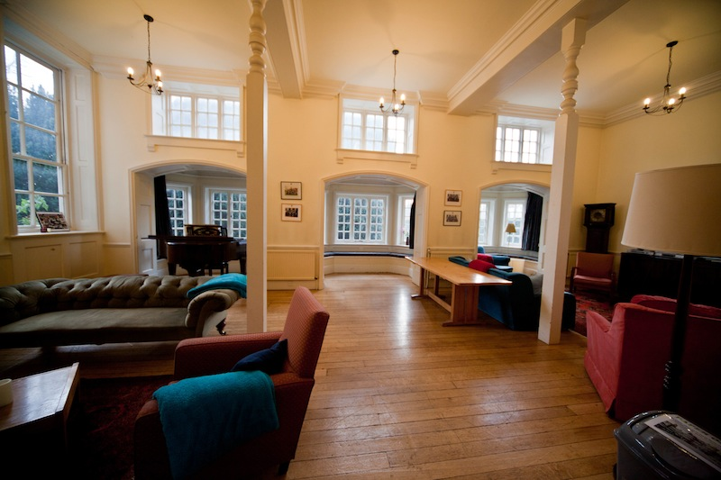

Representing the graduate student community at Newnham College
Click the green icons below for meal bookings & maintenance requests.
© Newnham MCR 2018
At Cambridge, Formal Hall is usually a three course silver-service meal that students dress up for and wear gowns. Our Formal Hall takes place around once a week in the stunning College Hall and you are allowed to bring guests with you to enjoy the food and lively atmosphere. There are three types of Formal Halls at Newnham: 1. Regular Formal Halls: held 1-2 times a week (usually a Wednesday or Thursday but check the schedule via the meal booking link). Any member of Newnham (MCR and JCR) may sign up and bring up to two guests. The prices are £9.95 for Newnham members, £11.35 for guests). 2. Subject Formal Halls: These are held throughout the year and primarily for students in a particular subject group, who will be invited free of charge to sit at High Table (you will receive an email about this when your subject hall is approaching). Space permitting, students in other subjects who wish to attend (and bring guests) may sign up in the normal procedure. 3. Graduate Formal Halls: limited to graduate students and their guests. Early sign-up is recommended, particularly for Christmas and end-of-term Formals. Before and after Graduate Formal Halls there are drinks in the MCR, to which all MCR members and guests are invited.
Graduate Supper is a free evening meal provided by Newnham for MCR students specifically, held every Tuesday during term-time at 6.30pm in the Main Hall. Funded by donations from alumni, Graduate Supper gives the graduate students of Newnham the opportunity to meet over a free meal in the wonderful setting of our main hall. Graduate Supper can be booked up to 3 days in advance via the meal booking system . Guests are welcome at Graduate Supper - they must be booked in through the meal booking system (see above) and the cost for a guest is £XX. This must be paid as usual through your college account, it cannot be paid in cash on the door. If your guest cannot attend last minute you must still pay unfortunately! When you come to Grad Supper, there will be a member of the MCR committee on the door, please tell them your name so they can check you off the list of people who booked. The food is served as a hot buffet - there is bread, a main, side dish, salad bar and desert. Please only take one portion of the food you ordered!
The Newnham buttery offers a wide variety of hot and cold meals to suit any dietary requirement. The meals are all excellent value for money, and are cooked on-site by the dedicated catering team. There is always a salad bar, as well as snacks, hot and cold drinks available. The buttery is open all year round except for short periods of closure at Christmas and Easter and a period during the Long Vacation (so perfect for graduate students). Food is available to take away, and if you chose to eat in then the buttery provides a lovely space to eat your dinner, meet friends or catch up on some work. Buttery Opening Hours are as follows: Breakfast 8.15am – 9.30 am Mon – Fri* Brunch 11.30am – 1.45 pm Sun** Lunch 12.30pm – 1.45 pm Dinner 6.30pm – 7.30 pm *(During the exam period of the Easter Term, breakfast is also available on Saturdays) **(during Term) Conveniently, you can pay by cash or using your college account in the buttery. If you pay using your college account, this means that you swipe your university card when you pay, and the balance of your college account is settled at the end of each term. The Newnham bar currently operates out of the buttery. Soon, when the new part of the college is complete there will be a new bar and cafe, so watch out for information about that!
